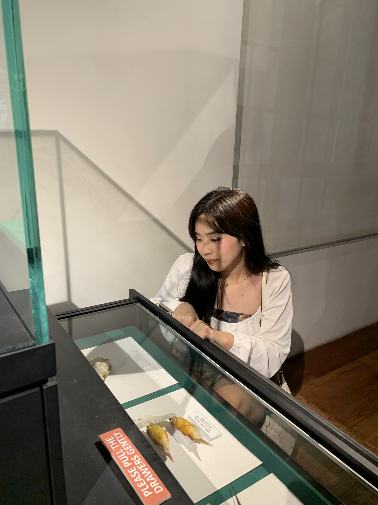

Hello! I'm Keith Ann Sosa, a BSIT student at Pamantasan ng Lungsod ng Valenzuela. I love exploring new ideas and turning concepts into creative projects that inspire. I'm always eager to learn, experiment, and grow as a designer.

Malanday National High School
St. Mary's of Meycauayan – Science and Technology Strand
Pamantasan ng Lungsod ng Valenzuela — Bachelor of Science in Information Technology
I originally planned to pursue radio technology in college, but I chose Information Technology after seeing its better opportunities. Along the way, I discovered my skills in editing and developed an interest in designing and coding.
Now, I continue to improve my skills and aim to become a better creator who can build meaningful and visually appealing projects that leave a lasting impression.
Video Editing
70%Cooking
90%Crafts
50%Singing
40%I enjoy dramas for their emotional stories and cinematography.
Playing mobile games is my favorite way to relax and have fun.
I love experimenting with styles and expressing creativity through beauty.
Their playful personality always brightens my day.
Sage green & Matcha green
I love anything Matcha!
I'm a cat lover 🐾
Ripples by Beabadoobee
Stranger Things
Black Clover
If you'd like to collaborate or just say hi, I'd love to hear from you!
Contact Me